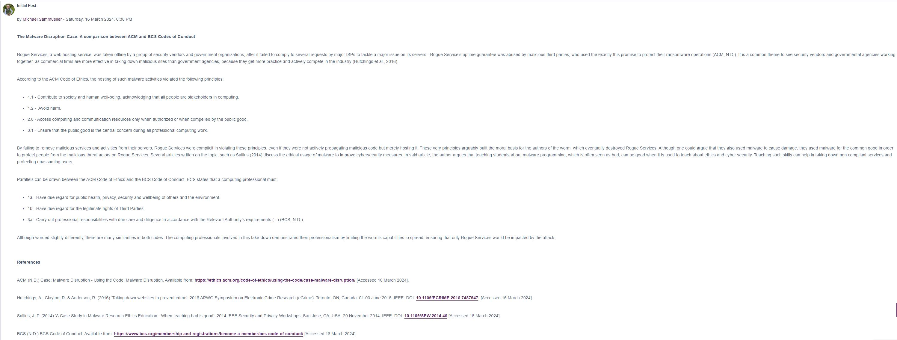

Unit 2: Artefacts
e-Portfolio Activity: Literature Review and Research Proposal Outlines
Part of this unit was to start planning our literature review on our chosen topic. We were also asked to consider our research proposal. For my literature, I chose the topic on State-sponsored Cyberterrorism in Global Politics.
Unit 1 Collaborative Discussion
Peer Responses
As part of this discussion forum activity, we were asked to respond to at least 3 of our peers.
